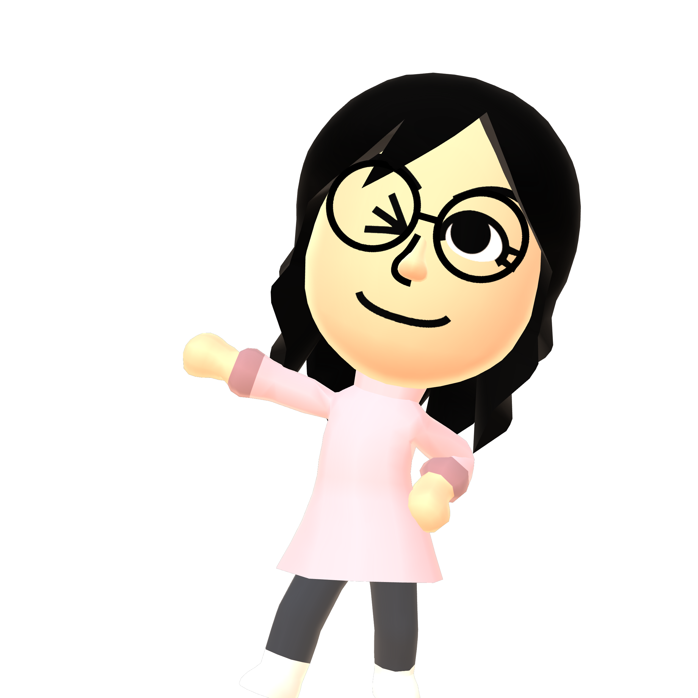
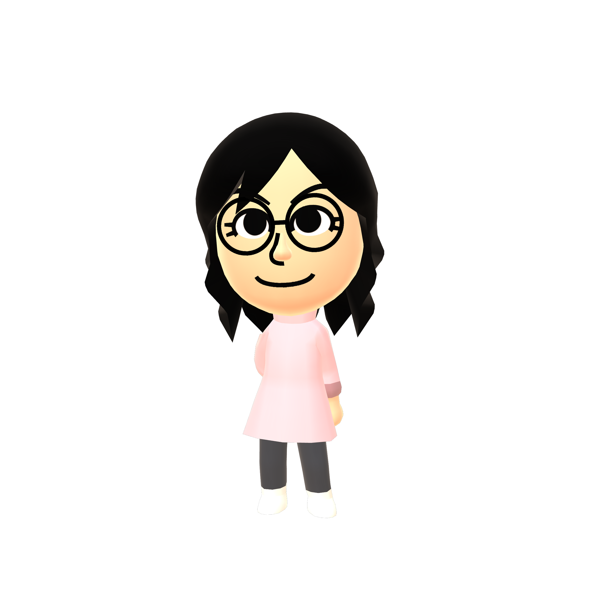
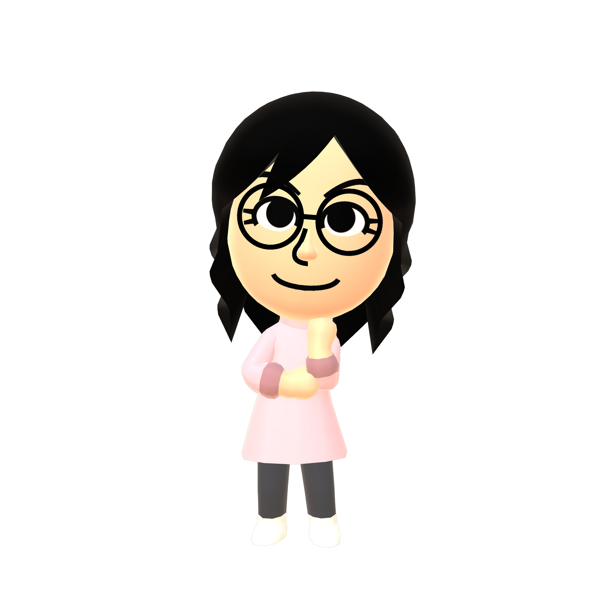

Revivetendo Relay Network
Set up Revivetendo's custom Pretendo relay on your homebrewed Wii U. This enables online video calling on Wii U Chat and access to Revivetendo's Juxt communities.
What is Revivetendo?
A dedicated, community-driven relay server network built for Aroma homebrew.

Wii U Chat Reborn
Connect with fellow Wii U owners for live video calls right on your GamePad screen with working camera and microphone support.

Custom Juxtaposition
Experience dedicated Miiverse communities. Share handwritten posts, screenshots, and artwork directly from your console or web browser.
Seamless Switching
Easily switch between official Pretendo Network (pretendo.network) and Revivetendo's custom servers anytime right from the Inkay menu.